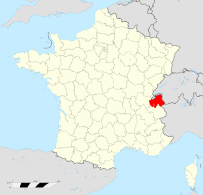
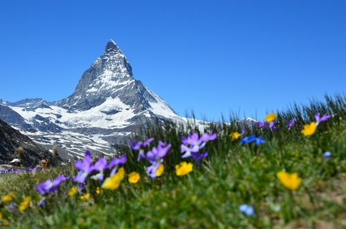
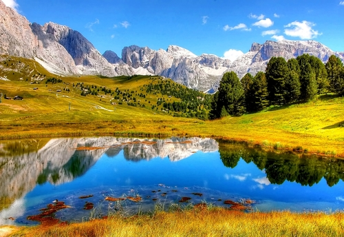
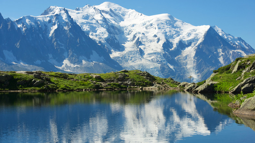
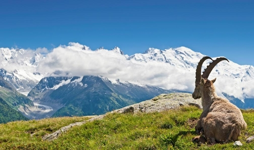

Avant d'être un département français, cette région appartenait aux Ducs de Savoie. Qui ont gouverné un État indépendant pendant 800 ans.les Savoie furent réunies définitivement à la France en 1860. Des traces d'habitations attestent que déjà des tribus nomades vivaient en Haute-Savoie et particulièrement autour du lac d'Annecy où ont été retrouvées des traces d'habitations.
La Haute-Savoie fait partie de la région Auvergne-Rhône-Alpes.
Elle est limitrophe des départements de l'Ain et de la Savoie, ainsi que des cantons de Genève, de Vaud et du Valais en Suisse et de la Vallée d'Aoste en Italie.
... L'altitude moyenne du département est de 1 160 m , et sa superficie de 4 388 km2 .
à La frontière de l'Italie, la haute savoie est
Située au cœur de la chaîne alpine,
Leurs limites naturelles sont : à l'ouest le cours du Guiers et celui du Rhône.
Au nord, le lac Léman. A l'est et au sud,
les crêtes des Alpes jusqu'aux grandes Rousses et jusqu'à une ligne qui longe le Grésivaudan puis remonte vers le nord-est en coupant la vallée de l'Isère.
Le climat département est pour l'essentiel montagnard, froid et neigeux en hiver, doux et orageux en été
Les intersaisons (avril et octobre) sont en moyenne plus sèches, mais la pluviométrie est globalement l'une des plus élevées de France.
L'enneigement, grâce au bon niveau pluviométrique et aux basses températures hivernales, est en moyenne et à une même altitude donnée, le meilleur de France (avec le Jura).
En plein hiver, on trouve généralement la neige à partir de 500 à 1 000 m. Vers 2 000 m, elle persiste d'octobre-novembre à avril-mai.
Au-dessus de 2 500 à 3 000 m se forment des glaciers.
Voici quelques photos pour donner une idée des paysages du département de la haute-savoie 
J'aimes surtout la montagne en été c'est pour ça qu'il y a des photo de neige mais de loin 
Pour télécharger le magazine mensuel du département